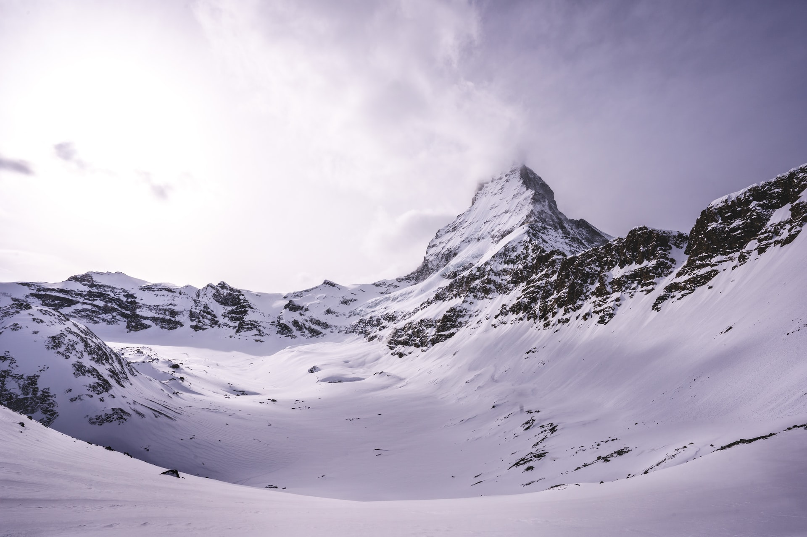

The Matterhorn is the symbol of the mountains in Switzerland and is located in Valais, more precisely in Zermatt, along the border between Switzerland and Italy.
Its height is 4'478 meters and has a pyramid shape. This mountain is known all over the world, in fact there are many tourists who go to this holiday resort to admire and
photograph the Matterhorn. Climbing the Matterhorn still keeps a great fascination today, but it is reserved only for experienced climbers equipped with a good crew,
because the ascent is very fatiguing. To facilitate the climb to the summit, around the mountain there are several shelters where you can take breaks.
The Matterhorn tour is a tour that takes eight to ten days, walking an average of 7 to 8 hours a day. Each stage is more than 10 km long and has a difference in altitude
of around 1,000 metres, making the route very exciting but also challenging. Very often, along the itinerary, the altitude exceeds 3,000 metres and
it is therefore necessary to be physically but also psychologically prepared. There are also other different trekking routes around the Matterhorn: from one day to one week excursions.
Close to this majestic mountain we find the Little Matterhorn which is 3,383 metres high and which can be reached from Zermatt thanks to the cable cars, one of which is the highest in Europe.
There are many tourists who climb this mountain, because it offers a spectacular view of the Matterhorn, glaciers and other Swiss, Italian, and French mountains.
I decided to bring the photo of the Matterhorn since I was a child I have always loved the mountains, in fact it is a place where I gladly spend both winter and summer holidays.
During the winter season from birth to about 15 years I spent my holidays in the Canton of Valais, and from the small town where I stayed with my family,
I could admire the Matterhorn mountain and I have always been fascinated by its beauty.